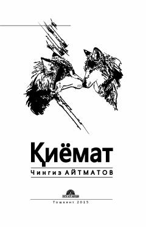

QInsoniyatning ma'naviy tanazzuli va tabiat bilan uyg'unlik haqidagi chuqur falsafiy roman.
Chingiz Aytmatovning ushbu mashhur romani insoniyatning ma'naviy tanazzuli, tabiat va jamiyat o'rtasidagi ziddiyatlar hamda ezgulik va yovuzlik kurashini o'zida aks ettiradi. Asar bo'rilar qismati, Avdiy Kallistratovning fojiali taqdiri va insoniy vijdon masalalarini chuqur falsafiy tahlil qiladi.